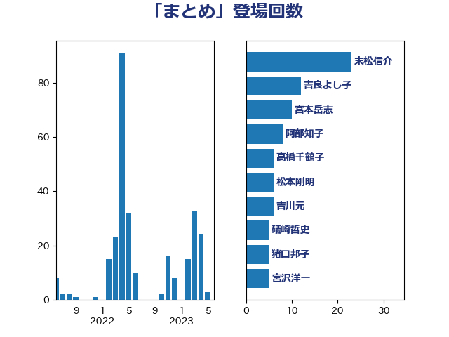

単語「まとめ」

| 末松信介 | 自由民主党 | 23 回 |
| 吉良よし子 | 日本共産党 | 12 回 |
| 萩生田光一 | 自由民主党 | 8 回 |
| 宮本岳志 | 日本共産党 | 7 回 |
| 吉川元 | 立憲民主党 | 6 回 |
| 松本剛明 | 自由民主党 | 6 回 |
| 勝部賢志 | 立憲民主党 | 4 回 |
| 宮沢洋一 | 自由民主党 | 4 回 |
| 藤田文武 | 日本維新の会 | 4 回 |
| 阿部知子 | 立憲民主党 | 4 回 |
| 高橋千鶴子 | 日本共産党 | 4 回 |
| 上野通子 | 自由民主党 | 3 回 |
| 塩川鉄也 | 日本共産党 | 3 回 |
| 森屋宏 | 自由民主党 | 3 回 |
| 田村貴昭 | 日本共産党 | 3 回 |
| 礒崎哲史 | 国民民主党 | 3 回 |
| 上川陽子 | 自由民主党 | 2 回 |
| 中曽根康隆 | 自由民主党 | 2 回 |
| 丸川珠代 | 自由民主党 | 2 回 |
| 古賀之士 | 立憲民主党 | 2 回 |
| 吉川沙織 | 立憲民主党 | 2 回 |
| 坂本祐之輔 | 立憲民主党 | 2 回 |
| 宮本徹 | 日本共産党 | 2 回 |
| 打越さく良 | 立憲民主党 | 2 回 |
| 柚木道義 | 立憲民主党 | 2 回 |
| 森山浩行 | 立憲民主党 | 2 回 |
| 池畑浩太朗 | 日本維新の会 | 2 回 |
| 浜野喜史 | 国民民主党 | 2 回 |
| 片山大介 | 日本維新の会 | 2 回 |
| 牧義夫 | 立憲民主党 | 2 回 |
| 田村まみ | 国民民主党 | 2 回 |
| 田村憲久 | 自由民主党 | 2 回 |
| 田村智子 | 日本共産党 | 2 回 |
| 石垣のりこ | 立憲民主党 | 2 回 |
| 福島みずほ | 社会民主党 | 2 回 |
| 紙智子 | 日本共産党 | 2 回 |
| 舩後靖彦 | れいわ新選組 | 2 回 |
| 西村智奈美 | 立憲民主党 | 2 回 |
| 谷田川元 | 立憲民主党 | 2 回 |
| 金田勝年 | 自由民主党 | 2 回 |
| 音喜多駿 | 日本維新の会 | 2 回 |
| ながえ孝子 | 無所属 | 1 回 |
| 上月良祐 | 自由民主党 | 1 回 |
| 中川正春 | 立憲民主党 | 1 回 |
| 伊波洋一 | 無所属 | 1 回 |
| 伊藤孝恵 | 国民民主党 | 1 回 |
| 伊藤岳 | 日本共産党 | 1 回 |
| 佐々木さやか | 公明党 | 1 回 |
| 佐々木紀 | 自由民主党 | 1 回 |
| 佐藤啓 | 自由民主党 | 1 回 |
| 倉林明子 | 日本共産党 | 1 回 |
| 加田裕之 | 自由民主党 | 1 回 |
| 加藤勝信 | 自由民主党 | 1 回 |
| 古川俊治 | 自由民主党 | 1 回 |
| 吉田とも代 | 日本維新の会 | 1 回 |
| 吉田統彦 | 立憲民主党 | 1 回 |
| 和田政宗 | 自由民主党 | 1 回 |
| 嘉田由紀子 | 無所属 | 1 回 |
| 坂本哲志 | 自由民主党 | 1 回 |
| 安江伸夫 | 公明党 | 1 回 |
| 室井邦彦 | 日本維新の会 | 1 回 |
| 宮口治子 | 立憲民主党 | 1 回 |
| 小沢雅仁 | 立憲民主党 | 1 回 |
| 小泉進次郎 | 自由民主党 | 1 回 |
| 小渕優子 | 自由民主党 | 1 回 |
| 小田原潔 | 自由民主党 | 1 回 |
| 小西洋之 | 立憲民主党 | 1 回 |
| 山下芳生 | 日本共産党 | 1 回 |
| 山井和則 | 立憲民主党 | 1 回 |
| 山岡達丸 | 立憲民主党 | 1 回 |
| 山崎誠 | 立憲民主党 | 1 回 |
| 山谷えり子 | 自由民主党 | 1 回 |
| 岩渕友 | 日本共産党 | 1 回 |
| 岬麻紀 | 日本維新の会 | 1 回 |
| 岸真紀子 | 立憲民主党 | 1 回 |
| 川合孝典 | 国民民主党 | 1 回 |
| 川田龍平 | 立憲民主党 | 1 回 |
| 平沼正二郎 | 自由民主党 | 1 回 |
| 徳永エリ | 立憲民主党 | 1 回 |
| 徳永久志 | 立憲民主党 | 1 回 |
| 斎藤アレックス | 国民民主党 | 1 回 |
| 斎藤嘉隆 | 立憲民主党 | 1 回 |
| 新妻秀規 | 公明党 | 1 回 |
| 木原誠二 | 自由民主党 | 1 回 |
| 梅村聡 | 日本維新の会 | 1 回 |
| 梶山弘志 | 自由民主党 | 1 回 |
| 横山信一 | 公明党 | 1 回 |
| 櫻井充 | 自由民主党 | 1 回 |
| 武村展英 | 自由民主党 | 1 回 |
| 水岡俊一 | 立憲民主党 | 1 回 |
| 永岡桂子 | 自由民主党 | 1 回 |
| 河野義博 | 公明党 | 1 回 |
| 泉健太 | 立憲民主党 | 1 回 |
| 津島淳 | 自由民主党 | 1 回 |
| 浅田均 | 日本維新の会 | 1 回 |
| 浅野哲 | 国民民主党 | 1 回 |
| 浮島智子 | 公明党 | 1 回 |
| 深澤陽一 | 自由民主党 | 1 回 |
| 源馬謙太郎 | 立憲民主党 | 1 回 |
| 玄葉光一郎 | 立憲民主党 | 1 回 |
| 玉木雄一郎 | 国民民主党 | 1 回 |
| 田中健 | 国民民主党 | 1 回 |
| 田島麻衣子 | 立憲民主党 | 1 回 |
| 田所嘉徳 | 自由民主党 | 1 回 |
| 矢倉克夫 | 公明党 | 1 回 |
| 秋野公造 | 公明党 | 1 回 |
| 穀田恵二 | 日本共産党 | 1 回 |
| 笠井亮 | 日本共産党 | 1 回 |
| 舟山康江 | 国民民主党 | 1 回 |
| 芳賀道也 | 国民民主党 | 1 回 |
| 豊田俊郎 | 自由民主党 | 1 回 |
| 赤池誠章 | 自由民主党 | 1 回 |
| 足立敏之 | 自由民主党 | 1 回 |
| 長友慎治 | 国民民主党 | 1 回 |
| 階猛 | 立憲民主党 | 1 回 |
| 青山周平 | 自由民主党 | 1 回 |
| 青山繁晴 | 自由民主党 | 1 回 |
| 馬場伸幸 | 日本維新の会 | 1 回 |
| 馬場雄基 | 立憲民主党 | 1 回 |
| 高村正大 | 自由民主党 | 1 回 |
| 鰐淵洋子 | 公明党 | 1 回 |